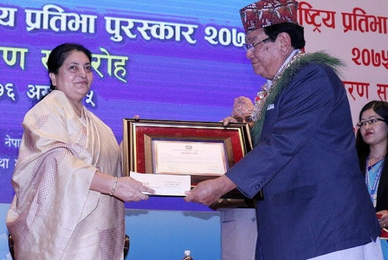

Senior ophthalmologist Dr. Sanduk Ruit, Executive Director of Tilganga Institute of Ophthalmology
has been honored with the ‘Prime Minister National Talent Award-2075.

The Union Minister for Health and Family Welfare Dr. Anbumani Ramadoss presenting the Reader’s Digest
“Asian of the Year 2007” award, to Dr. Sanduk Ruit, an eminent eye surgeon from Nepal, in New Delhi on March 05, 2007.

Padma Shri is the fourth highest civilian award in India, after the Bharat Ratna, the Padma Vibhushan and the Padma Bhushan.
To read articles about Dr. Ruit’s Padma Shri Award, please visit:

As the recipient of Asia’s equivalent of the Nobel Prize for healing the sight of hundreds of thousands,
the Nepal-born ‘God of Sight’ is determined to help heal millions more.